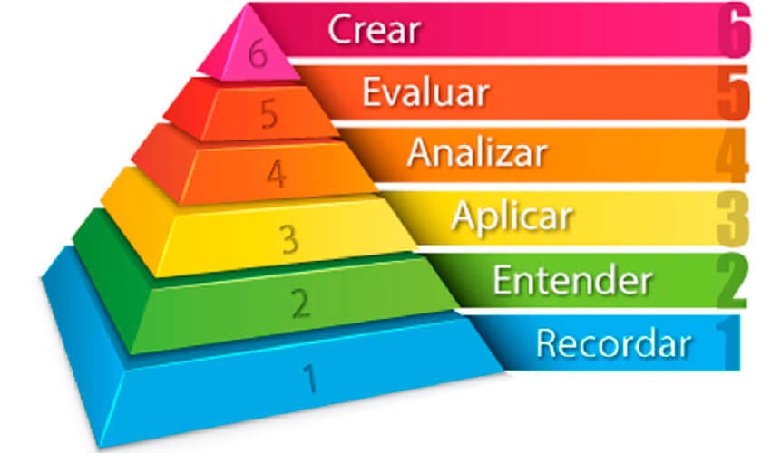
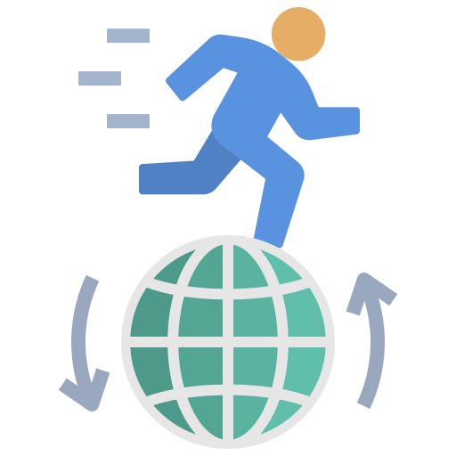

Para conocer toda la información, haga clic en la flecha de la derecha.
Una buena práctica educativa consiste en comprobar, de forma regular, que se hayan adquirido adecuadamente los aprendizajes y competencias clave de su clase. Existen muchas maneras de hacerlo, pero una de las más eficientes, por la facilidad de aplicación, son los cuestionarios de evaluación y seguimiento.
Los ejercicios de preguntas y respuestas pueden ser muy versátiles si son acompañados de algún material introductorio o de repaso que les dé contexto. La única condición para mantener el interés de sus alumnos es centrarse en interrogantes relevantes para mantener las evaluaciones ágiles y entretenidas.
Veamos algunas de sus aplicaciones.
Para consultar la información de cada tema, seleccione la pestaña correspondiente.
|
Al terminar una lección o una unidad es recomendable aplicar un cuestionario de repaso que nos dé un reporte del nivel de aprovechamiento de nuestros alumnos. Así mismo, nos ayudará a detectar cuáles son las áreas de aprendizaje que han quedado dominadas y cuáles requieren un refuerzo para alcanzar un grado de dominio adecuado. De esta forma, un cuestionario de repaso se convierte en una herramienta importante para clasificar a nuestros alumnos en función de qué tan rápido y correctamente responden a las preguntas planteadas en el aula. Con esta clasificatoria se podrán asignar nuevas encomiendas de trabajo para reforzar aquellos aspectos que no han quedado del todo claros para algunos estudiantes. Lo recomendable será agruparlos de tal manera que los más avanzados apoyen a los menos destacados en este tema en particular y que los alumnos promedio aprendan a trabajar entre ellos para construir sus propias soluciones. |
Veamos un ejemplo de cómo organizar a nuestros alumnos tomando como base esta clasificación: Suponga que tenemos un grupo de veinticuatro alumnos que han participado en el cuestionario de repaso y fueron clasificados con base en su desempeño en el mismo. Ahora, queremos agruparlos en cuatro equipos de seis integrantes para fortalecer y homologar los conocimientos recién adquiridos. El problema central de esta estrategia de reforzamiento y nivelación radica en encontrar un equilibrio adecuado pues, muchas veces, la queja de sus alumnos será que los equipos están desequilibrados y siempre ganan los mismos. Lo que acaba por desmotivar y aislar a los que nunca ganan (el grupito de atrás del salón). |
Para asegurarnos de hacer equipos bien equilibrados, lo primero será dividir al grupo en dos filas de igual número de participantes. En este caso, serían dos filas de doce alumnos en las que acomodaríamos la numeración en forma de herradura, empezando de izquierda a derecha y terminando de derecha a izquierda (vea el ejemplo):
| 1 | 2 | 3 | 4 | 5 | 6 | 7 | 8 | 9 | 10 | 11 | 12 |
| 24 | 23 | 22 | 21 | 20 | 19 | 18 | 17 | 16 | 15 | 14 | 13 |
Ahora, emparejaremos al primero y al último de la clasificación, seguimos con el segundo y el penúltimo, y continuamos con el tercero y el antepenúltimo. De esa forma, hemos reunido a nuestro primer equipo de seis miembros:
| 1 | 2 | 3 | 4 | 5 | 6 | 7 | 8 | 9 | 10 | 11 | 12 |
| 24 | 23 | 22 | 21 | 20 | 19 | 18 | 17 | 16 | 15 | 14 | 13 |
Seguimos el mismo procedimiento con los otros tres equipos y, de esta forma, nos aseguraremos de que quienes han tenido un mayor aprovechamiento en esta lección, apoyen a quienes han tenido algunas dificultades, y quienes tienen un desempeño promedio no acaben por desequilibrar los equipos al asociarse con aquellos con rendimientos muy dispares. Por lo tanto, los cuatro equipos tienen la misma oportunidad de ganar considerando sus niveles de desempeño, la diferencia se reflejará en la forma de colaborar entre ellos, es decir, en si tienen un buen manejo de sus habilidades blandas de socialización.
| Equipo 1 | Equipo 2 | Equipo 3 | Equipo 4 | ||||||||
| 1 | 2 | 3 | 4 | 5 | 6 | 7 | 8 | 9 | 10 | 11 | 12 |
| 24 | 23 | 22 | 21 | 20 | 19 | 18 | 17 | 16 | 15 | 14 | 13 |
La recomendación es que las actividades de refuerzo encomendadas se puedan responder de varias formas posibles, utilizando los conocimientos recién adquiridos. En este sentido, busque cuál es la pregunta central a responder con esta lección, qué es lo que buscamos entender o descubrir en el fondo. De esta forma, nos aseguraremos de fomentar el diálogo y de que todos los estilos de trabajo sean bien recibidos en los equipos y que se estimule la creatividad y el sentido crítico en el aula.
|
Puede ser que necesitemos verificar si todos nuestros alumnos alcanzaron los niveles de aprendizaje deseados o requeridos en la lección. En este sentido, es importante tener en cuenta los niveles trabajados al momento de dar nuestra lección, para posteriormente proceder a evaluarlos. ¿Buscamos que nuestros estudiantes memorizaran, entendieran, aplicaran, analizaran, evaluaran o crearan algo? (ver imagen). Tenga en cuenta que para llegar a un nivel superior de aprendizaje, es necesario haber pasado por los niveles anteriores en el orden indicado. Por ejemplo, si buscamos la aplicación de una fórmula matemática, primero debemos asegurarnos de que el alumno recuerda su estructura y entiende cómo se aplica. De lo contrario, cometerá tantos errores que le parecerá imposible resolver este tipo de problemas. En palabras simples, para correr, primero hay que aprender a caminar. |
 |
Siguiendo este ejemplo, la lección abarcó los tres primeros niveles de aprendizaje, por lo que sería pertinente verificar cuántos alcanzaron el primero (recuerdan la fórmula), cuántos el segundo (entienden cómo se aplica) y cuántos el tercero (la aplican correctamente). De esta manera, sabremos qué nivel de desarrollo está alcanzando el grupo y podremos definir las estrategias de trabajo para subsanar las brechas de desempeño en los dos grupos que no llegaron al nivel requerido.
Quizá le resulte un tanto difícil saber cómo aplicar cada uno de estos niveles de aprendizaje, por lo que le comparto la siguiente tabla en la que se conectan las seis dimensiones del conocimiento con los seis niveles de aprendizaje para tener una idea de las actividades a realizar y evaluar de acuerdo con el tipo de conocimiento que estemos trabajando.
Para consultar el rubro de enseñanza y evaluación de cada actividad, haga clic sobre los iconos, según corresponda.
Siempre debemos ser conscientes al respecto del nivel de enseñanza al que llegan nuestras lecciones y cómo iremos generando los procesos de evaluación de dichos aprendizajes. Pues sólo de esta manera, los cuestionarios de repaso podrán servirnos de guía en los procesos de refuerzo didáctico para nuestros grupos de aprendizaje.
|  | El mundo actual está viviendo cambios cada vez más acelerados, lo que hace que el conocimiento que es vigente al día de hoy, puede dejar de serlo en un par de años. Esto implica que nuestros alumnos deberán aprender, desaprender y reaprender a lo largo de toda su vida, pues, muy seguramente, se enfrentarán a problemas que hoy no existen y trabajarán en áreas que actualmente nos son desconocidas. |
A continuación, veamos el siguiente video que ilustra muy bien este punto:
|
Carreras como nanotecnología, negocios electrónicos, ingeniería cuántica, biotecnología, robótica, ingeniería aeroespacial, agricultura orgánica, nuevos medios, diseño 3D y artes liberales, entre otras, no existían hace 10 años. La globalización y el crecimiento exponencial de las Tecnologías de la Información y la Comunicación (TIC's), ponen nuevos y grandes retos a los docentes de todos los niveles, pues la metodología de transmisión y reproducción de conocimiento ya es obsoleta en un mundo cambiante. Nuestros estudiantes necesitan de nuevas competencias y habilidades para desenvolverse en la era globalizada del conocimiento. |
Ante este nuevo panorama, para llegar a ser personas saludables, felices, con capacidad de contribuir al bien común, nuestros estudiantes requerirán mayores habilidades analíticas y comunicativas, capacidad para resolver problemas, creatividad e iniciativa, y saber colaborar de manera constructiva y efectiva con otros. A este conjunto de habilidades propuestas por la UNESCO les llamaremos competencias del siglo XXI, las cuales nos permitirán reformular nuestras principales aspiraciones en materia de aprendizaje, haciéndolas más relevantes para esta nueva era. |
Ahora, revise la siguiente infografía sobre las habilidades propuestas.
El desarrollo de estas habilidades debe generarse de forma transversal a la currícula educativa, para fortalecer y preparar a los estudiantes de cara a los problemas que enfrentarán en sus vidas profesionales. Por tal motivo, resulta importante llevar un seguimiento del desarrollo de dichas habilidades, creando cuestionarios de evaluación para constatar cuál es el nivel logrado por el alumnado, detectando las áreas de mejora y aprendizaje.
|
Adicionalmente, se pueden incorporar estudios de caso con dilemas éticos o que se prestan a diversas interpretaciones para detectar las malas prácticas de los futuros profesionales y corregirlas oportunamente mediante guía y supervisión. La sugerencia es relatar el caso en el salón de clases y grabar un video para que los alumnos lo puedan ver. Posteriormente, hay que elaborar preguntas que requieran de una opinión personal o contengan un dilema ético para detectar qué tan propensos están los alumnos a tomar malas decisiones. Las respuestas a estos dilemas tienen que ser de opción múltiple, con una respuesta correcta y una equivocada que aparente ser acertada; una respuesta equivocada que vaya en el sentido contrario de la correcta y una del todo inverosímil. |
Ahora, veamos la información que podemos obtener de estas evaluaciones.
Para ello, haga clic en cada elemento que se encuentra en el recuadro de color para leer la información de cada uno de ellos.
Como podemos ver, el uso de cuestionarios de seguimiento y clasificación resultan un apoyo invaluable para nuestra actividad docente. Sin embargo, efectuar este proceso estadístico de forma manual es muy laborioso y tardado, por lo que muy pocos profesores lo llevan a cabo.
Afortunadamente, contamos con el apoyo de herramientas como Kahoot, que realizan este proceso estadístico y clasificatorio de forma automática e inmediata, permitiéndonos enfocarnos en lo realmente importante: la educación de nuestros alumnos.
Ahora, es momento de revisar un programa de aplicación de cuestionarios en línea a manera de competiciones entre los alumnos, la diferencia central entre esta aplicación y las examinaciones comunes radica en que además de calificar los aciertos y errores, también evalúa la rapidez con que se responden las preguntas, presentando un ranking al final de la evaluación que nos permitirá organizar al grupo en función de su desempeño.
Para consultar la información de los siguientes subtemas, seleccione la pestaña que corresponda.
|
Kahoot es una herramienta de preguntas y respuestas muy útil para aprender y repasar conceptos de forma entretenida, pues los cuestionarios se manejan como si fuera una competencia. La forma más común de utilizarlo es mediante preguntas tipo test, aunque también hay espacio para la discusión y el debate. Encontrar un juego o aplicación que se adapte fácilmente a la temática de una clase o grupo es complicado, y justamente esa es una de las principales ventajas de esta plataforma de educación social gamificada, pues cualquier persona puede crear rápidamente contenido divertido para un juego, independientemente de la temática a tratar. |
Revise ahora el siguiente ejemplo de juego en Kahoot. Se recomienda ver sólo los primeros cinco minutos.
Joaquín López Lérida (2015, 4 de marzo). Did You Know Shift Happens, 2014-Subtítulos español. [Video]. YouTube. https://youtu.be/TbtrKrC9IJs
Aprende N5 (2021, 9 de febrero). Kahoot en vivo. [Video]. YouTube. https://youtu.be/T6IXnxp2ET0
De Mingo-López, D. V., & Vidal-Meliá, L. (2019). Actividades Kahoot! en el aula y satisfacción del alumnado. 3C TIC: Cuadernos de desarrollo aplicados a las TIC, 8(1), 96-115. https://doi.org/10.17993/3ctic.2019.81.96-115.
Mateo-Gallego, C. & Ruiz-Yepes, G. (2018). Terapias de errores con aprendizaje móvil y gamificación: estudio comparativo en español de los negocios. Revista Folios, (48),121-135. https://www.redalyc.org/articulo.oa?id=345958296009.
Pintor Díaz, P. (2017). Gamificando con Kahoot en evaluación formativa. Revista Infancia, Educación y Aprendizaje, 3(2), 112-117. https://doi.org/10.22370/ieya.2017.3.2.709.